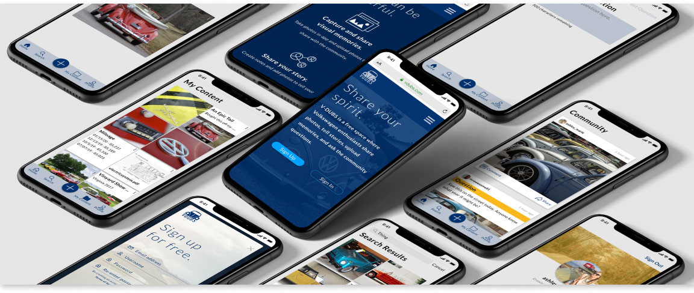
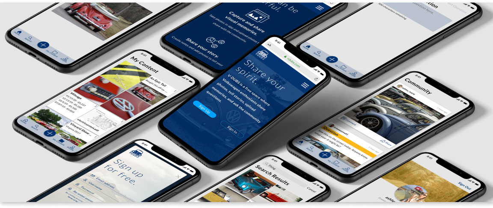
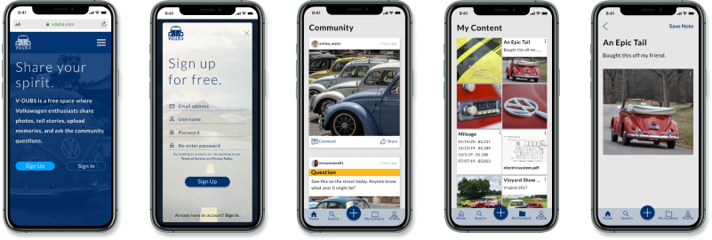

Share Your Spirit.
A free storage and sharing app for Volkswagen enthusiasts.
A free storage and sharing app for Volkswagen enthusiasts.
Volkswagen enthusiasts have a variety of ways to access information: from online forums and Facebook groups for asking questions and posting photos, to personal cloud storage for storing car-related documents. But, no cohesive app currently exists where Volkswagen enthusiasts can store and share their passion from one platform.
V-DUBS is free storage and sharing app for Volkswagen enthusiasts to share photos, tell stories, upload documents related to your passion, and ask questions to the community.
I conducted 2 user surveys. The first survey on cloud storage elicited interesting results that warranted conducting a second survey on social media usage.
of cloud storage users collaborate
of cloud storage users share files and folders
access social apps from mobile device
of users access social apps daily
In-depth interviews:
I had coffee with several members of the Volkswagen community to learn more about their web habits as they pertain to Volkswagen. I learned there are 3 major tasks that Volkswagen enthusiasts do:
The addition of a second user survey set me back on my timeline. But, I felt that gathering additional data (especially after analyzing the results of the first survey) in order to create an app that the community wants to use was well worth the extra week and a half.
Competitive Analysis
I performed competitive and SWOT analyses on 2 cloud storage platforms (Google Drive and Dropbox) and 1 social/organizational platform, Pinterest. I learned that opportunities do exist to create a pleasant, easy to use platform that has easy to find and store information tailored to a specific user base.
User Personas
When I attend Volkswagen events, I observe several types of people. Using my own observations, along with survey datal previously discussed, I generated 3 personas:

I love cars and am currently restoring a 1996 Volkswagen Jetta. I want to easily share restoration photos and ask questions to the community.
I find myself sharing content in multiple places. I don’t want to use multiple apps to find and share information.

I consider myself an amateur car restorer, collector, and photographer. I want an app where I can share my passion with others who feel the same.
I can’t find any cohesive apps related to this community. The other platforms I use are cluttered with irrelevant information.

I manage automobile exhibits for an antique auto museum and enjoy driving my classic VW to auto shows. I want an easy way to create notes and share photos in one app.
Uploading my notes to share with others isn’t easy and I can’t create new content with my current apps.
User Stories
After researching apps and creating a lengthy list of tasks a user wants to do on the app, I prioritized tasks to create an MVP.
High Priority Items
The mistake I originally made was including too many high priority user stories. I decided to re-evaluate each user story using the 80/20 rule. Because a priority isn’t set to high, does not mean I won’t develop it. It will just be developed with less urgency.
User Flows
From the highest priority user stories, I sketched flows for the following tasks:

Wireframes


I tested 10 tasks ranging from signing up for an account, creating content, and logging out of the app.
Results Summary:
Confusion over the differences between the Community Tab and the Home button
Extend the landing page to include more info like ‘About’ and ‘Features’
Hard to tell if Community and My Content tabs are actually clickable
Add organization options like folders or tags within your own content